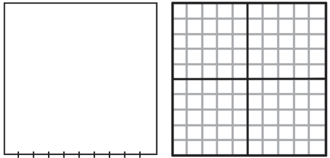
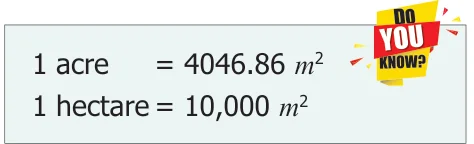

Consider a square of side 1 cm. Therefore, its area is 1 sq. cm (1 cm ). Divide one of its sides into 10 equal parts. One such part is equal to 1 mm. We know that 1 cm \(= 10\) mm. That is a square of side 1 cm is made up of 100 small squares with 1 mm square area each. Therefore, the side of this square is 10 mm and the area of this
square = side x side =10 mm x 10 mm \(= 100\) sq. mm (100 mm ). Therefore, the area of a
square with 1 cm side is 1 cm \(= 100\) mm .
Similarly, the other conversions can also be done. For example,
- 1 cm \(= 10\) mm x 10 mm

\(= 100\) mm
- \(1 m = 100\) cm x 100 cm
\(= 10,000\) cm
- 1 km \(= 1000 m x 1000 m\)
\(= 10,00,000 m\)
Example 15 Fill in the blanks.
- 2 cm = _____ mm
- \(18 m =\) _____ cm

- 5 km = _____ m
Solution
- 2 cm \(= 2 \times 100 = 200\) mm
- \(18 m =18 \times 10000 = 1,80,000\) cm
- 5 km \(= 5 \times 1000000 = 50,00,000 m\)
Try these
Fill in the blanks
- 7 cm = _____ mm ii) \(10 m =\) _____ cm iii) 3 km = _____ m
Perimeter and Area ICT CORNER
Expected Outcome
Step 1 Step 2
Open the Browser by typing the URL Click on New Problem and find the Link given below (or) Scan the QR Code. perimeter and Area of the shape by GeoGebra work sheet named "Perimeter counting along the squares. Click on the and Area" will open. There is a worksheet respective check boxes to check your under the title Counting by squares. answer.
Step1 Step2
Browse in the link: